Установка импульсного
одноосного (диаметрального) намагничивания-домагничивания
магнитных систем модельных электродвигателей на основе ферритовых постоянных
магнитов
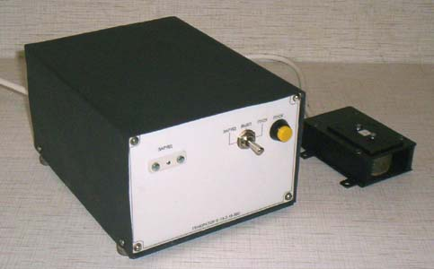
1. Введение
Появление высокоэнергетических постоянных магнитов (ферритовых, а особенно редкоземельных [5]) привело к их широкому использованию в магнитных системах электродвигателей, применяемых, в частности, в моделизме. Миниатюрные электродвигатели авиа-, судо- и автомоделей часто работают в форсированном режиме в жестких условиях эксплуатации. Требуемая высокая мощность при малых габаритах диктует необходимость повышенной плотности тока в обмотках, следствием чего является высокая рабочая температура и большие значения обратных (размагничивающих) магнитных полей. Под воздействием этих факторов магнитные системы электродвигателей подвержены размагничиванию и потере магнитных свойств, следствием чего является уменьшение мощности и повышенное энергопотребление мотора. Поэтому периодически требуется вновь намагничивать или домагничивать магнитные системы электродвигателей до насыщения [6] в установках намагничивания [10], зачастую в полевых условиях.
2. Состав установки и назначение
Для выполнения вышеупомянутой процедуры намагничивания-домагничивания магнитных систем модельных электродвигателей на основе ферритовых постоянных магнитов была разработана, изготовлена и испытана малогабаритная установка в составе емкостного накопителя энергии 150 Дж 550 В [4] и импульсного индуктора с рабочей зоной (зоной намагничивания) размером 40 х 18 х 24 мм3 (намагничивание по высоте 24 мм). Внешний вид установки показан на рис. 2.1. Она позволяет производить одноосное, в частности, в диаметральном направлении намагничивание магнитных систем электродвигателей на основе ферритовых постоянных магнитов, а также при необходимости одиночных постоянных магнитов подходящих размеров и состава (ферриты, ЮНДК, магнитная сталь [5]). Полярность намагничивания задается либо положением магнитной системы (постоянного магнита) в рабочей зоне индуктора, либо полярностью подключения индуктора к емкостному накопителю. Установка может применяться как в бытовых, так и в полевых условиях. При отсутствии питающей сети 220 В 50 Гц установка может питаться от бортовой сети автомобиля или от аккумулятора через сравнительно маломощный преобразователь напряжения [7].
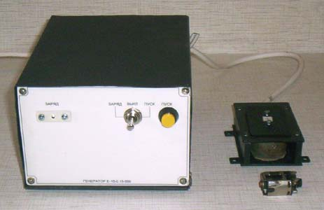
Рис. 2.1. Установка импульсного одноосного намагничивания-домагничивания магнитных систем модельных электродвигателей на основе ферритовых магнитов.
3. Технические данные установки:
4. Расчет и конструкция импульсного индуктора
Импульсный индуктор представляет из себя прямоугольную катушку размерами 60 х 40 х 24 мм3 с проходным отверстием 40 х 18 мм2, помещенную в стальной корпус и снабженную силовым кабелем и разъемом для подключения к емкостному накопителю энергии (рис. 4.1, 4.2). Индуктор может крепиться к рабочей поверхности с помощью крепежных планок с отверстиями. Намагничиваемая магнитная система устанавливается в требуемом положении в зону намагничивания и закрывается верхней стальной крышкой.
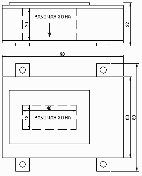
Рис. 4.1. Эскиз импульсного индуктора.
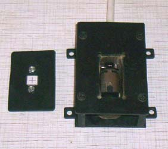 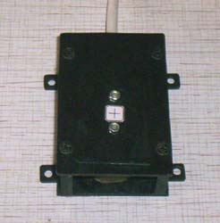
Рис. 4.2. Внешний вид импульсного индуктора: слева со снятой верхней крышкой и магнитной системой электродвигателя в зоне намагничивания, справа с закрытой верхней крышкой.
Расчет параметров катушки индуктора, импульса тока и магнитной индукции в ней выполнен с помощью программ Ansoft Maxwell [1], Rectangular Coil [9] и UNI [3]. Расчетная модель катушки в программе Ansoft Maxwell показана на рис. 4.3, а результаты расчета с помощью программ Rectangular Coil и UNI - на рис. 4.4 и 4.5. Катушка намотана на оправке медным проводом ПЭТ-155 диаметром 0.8 мм, число витков примерно 140, расчетное активное сопротивление 0.6472 Ом, расчетная индуктивность 0.62704 мГн. Емкостной накопитель энергии 150 Дж 550 В создает в катушке импульс тока амплитудой примерно 370 А и длительностью примерно 2 мс. При этом расчетное амплитудное значение магнитной индукции в центре катушки превышает 2 Тл. Внутреннее активное сопротивление накопителя и подключающих элементов принято равным 0.15 Ом.
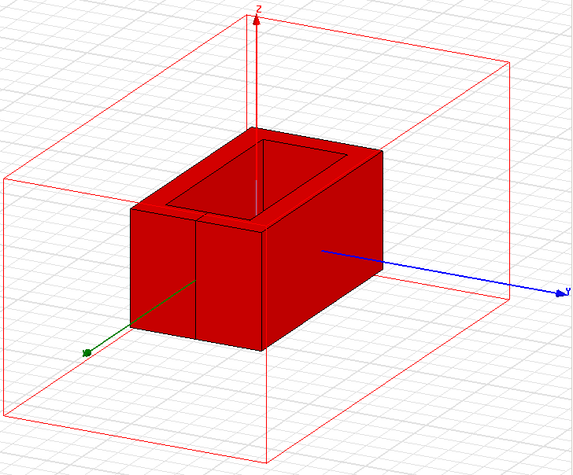
Рис. 4.3. Расчетная модель катушки индуктора в программе Ansoft Maxwell. Шаг сетки 5 мм. Результат расчета индуктивности 0.62704 мГн.
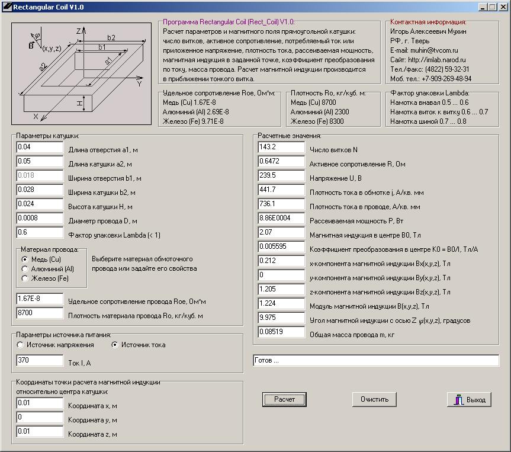
Рис. 4.4. Расчет параметров прямоугольной катушки индуктора с помощью программы Rectangular Coil: число витков примерно 140, активное сопротивление 0.6472 Ом, амплитуда осевой составляющей магнитной индукции в центре 2.07 Тл и 1.205 Тл на краях при амплитуде импульса тока 370 А.
Рис. 4.5. Расчет параметров импульса тока в катушке с помощью программы UNI: емкостной накопитель 150 Дж 550 В, активное сопротивление нагрузки 0.6472 Ом, индуктивность 0.62704 мГн, амплитуда импульса тока примерно 370 А, длительность - примерно 2 мс (удвоенное время достижения пика).
Перегрев провода обмотки за одиночный импульс тока амплитудой 370 А длительностью 2 мс рассчитан с помощью программы dTWire [2] и не превышает 5.5 градусов (рис. 4.6) даже в приближении прямоугольной формы импульса. Реальный перегрев предполагается примерно в 2 раза меньше.
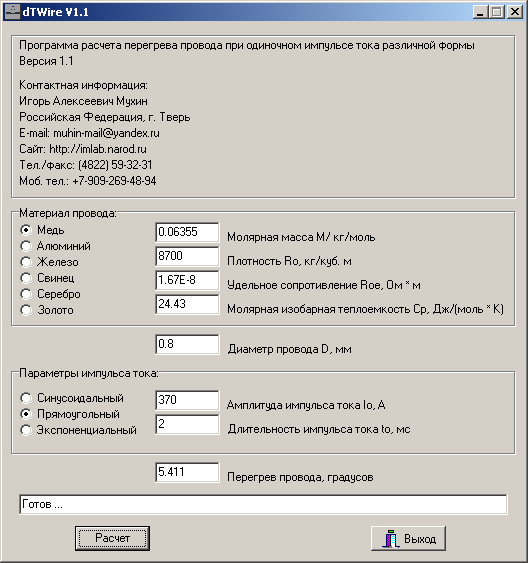
Рис. 4.6. Расчет перегрева обмотки за одиночный импульс тока с помощью программы dTWire: диаметр медного провода 0.8 мм, форма импульса тока прямоугольная, амплитуда импульса тока 370 А, длительность 2 мс, перегрев 5.411 градусов.
Расчет индуктора в сборе (индуктивность, амплитуда импульса тока, амплитуда магнитной индукции в зоне намагничивания) выполнен с помощью программ Ansoft Maxwell [1] и UNI [3]. Расчетная модель индуктора в программе Ansoft Maxwell показана на рис. 4.7, а результат расчета с помощью программы UNI - на рис. 4.8. Расчетная индуктивность индуктора 0.75354 мГн. Емкостной накопитель энергии 150 Дж 550 В создает в катушке индуктора импульс тока амплитудой примерно 350 А и длительностью примерно 2 мс (амплитуда импульса тока несколько уменьшается при установке катушки в стальной корпус). При этом расчетное амплитудное значение магнитной индукции в рабочей зоне находится на уровне 2 Тл (рис. 4.9 - 4.11).
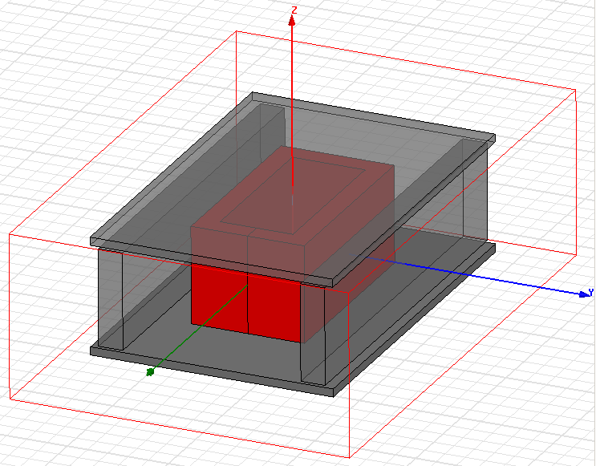
Рис. 4.7. Расчетная модель индуктора в программе Ansoft Maxwell. Шаг сетки 5 мм. Результат расчета индуктивности 0.75354 мГн.
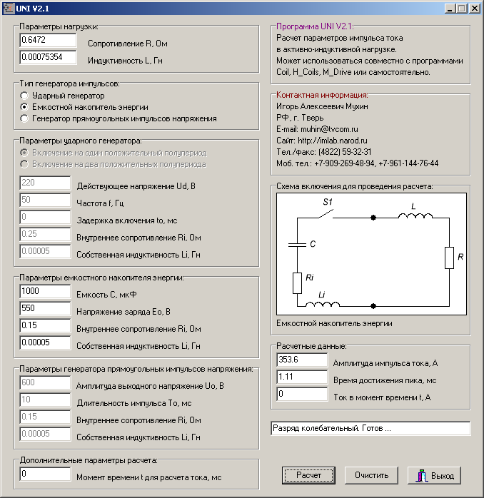
Рис. 4.8. Расчет параметров импульса тока в индукторе с помощью программы UNI: емкостной накопитель 150 Дж 550 В, активное сопротивление нагрузки 0.6472 Ом, индуктивность 0.75354 мГн, амплитуда импульса тока примерно 350 А, длительность - примерно 2 мс (удвоенное время достижения пика).
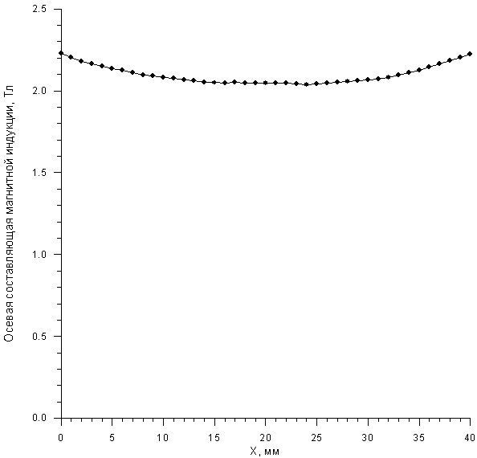
Рис. 4.9. Осевая составляющая амплитуды магнитной индукции на длинной поперечной центральной оси в зоне намагничивания.
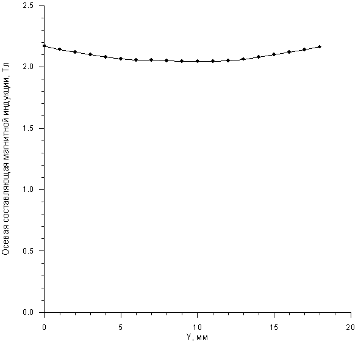
Рис. 4.10. Осевая составляющая амплитуды магнитной индукции на короткой поперечной центральной оси в зоне намагничивания.
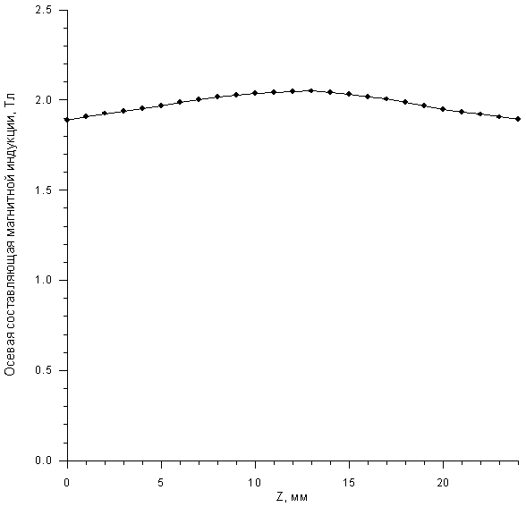
Рис. 4.11. Осевая составляющая магнитной индукции на продольной (вертикальной) центральной оси в зоне намагничивания.
По результатам расчетов можно сделать вывод, что параметры магнитного поля в рабочей зоне индуктора позволяют гарантированно намагничивать любые марки ферритовых магнитов, а также ЮНД и ЮНДК [5].
5. Испытания установки
Активное сопротивление индуктора с кабелем подключения измерено мультиметром APPA-107N и составляет 0.69 Ом, хорошо согласуясь с рассчитанным значением 0.6472 Ом в сумме с дополнительным сопротивлением кабеля и разъема. Индуктивность индуктора с кабелем подключения 0.89 мГн измерена прибором VC6243 на частоте 1000 Гц, также вполне соответствуя рассчитанному значению 0.75354 мГн.
Контроль формы импульса и амплитуды тока в катушке индуктора выполнен с помощью последовательно подключенного шунта (падение напряжения 75 мВ при токе 50 А) и осциллографа UTD2102CEL-R. Форма импульса тока показана на рис. 5.1. Амплитуда импульса тока составляет примерно 400 А (расчетное значение 370 А). Длительность импульса на уровне половины амплитуды составляет примерно 2 мс, общая длительность импульса тока не превышает 4 мс.
Для контроля параметров импульса магнитной индукции в зоне намагничивания индуктора использовался импульсный тесламетр [8] с внешним аналоговым выходом с коэффициентом преобразования 1 В/Тл и осциллограф UTD2102CEL-R. Форма импульса магнитной индукции в центре рабочей зоны показана на рис. 5.2. Измеренная амплитуда магнитной индукции составляет 1.1 Тл, длительность импульса на уровне половины амплитуды примерно 3 мс, общая длительность импульса не превышает 10 мс. С учетом ограниченной полосы пропускания тесламетра (примерно от 0 до 150 ... 200 Гц) измеренные параметры магнитного импульса достаточно хорошо согласуются с расчетными и с параметрами импульса тока. На рис. 5.3 показана уточненная форма импульса магнитной индукции при снятии сигнала непосредственно с датчика Холла. При чувствительности датчика 59 мкВ/мТл амплитуда магнитной индукции составляет 1.9 Тл, хорошо согласуясь с расчетной.
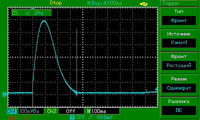
Рис. 5.1. Форма импульса тока через катушку индуктора: цена деления по вертикали 100 мВ соответствует примерно 67 А/дел., амплитуда импульса тока 400 А, цена деления по горизонтали 1 мс/дел., длительность импульса примерно 2 мс.
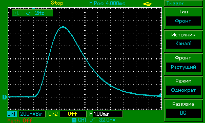
Рис. 5.2. Форма импульса магнитной индукции в центре зоны намагничивания индуктора: цена деления по вертикали 200 мТл/дел., амплитуда импульса магнитной индукции 1.1 Тл, цена деления по горизонтали слева 1 мс/дел.
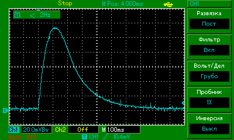
Рис. 5.3. Форма импульса магнитной индукции в центре зоны намагничивания индуктора: сигнал непосредственно с датчика Холла, чувствительность 59 мкВ/мТл, амплитуда магнитной индукции 112/59 ≈ 1.90 Тл.
Ссылки:
30.03.2022
10.06.2022
Альтернативные источники
энергии
Компьютеры и
Интернет
Магнитные поля
Механотронные системы
Перспективные
разработки
Электроника и
технология